Dev-Log #7: New Icons feat. Letters, Shirts and Sticks
June 27, 2019.
Hello everyone! Today I have a more art based dev-log. I am going to talk about the new icons, the process of making them and the few interesting problems that popped up.
Let me start by explaining what I mean by icon. Within pretty much all the menus in the game, stats are shown. These stats could be for characters, weapons, armor, etc. Before, I just had letters representing theses stats. For example, “P” was points and “D” was defense. In my pursuit to polish the game, I decided to switch these letters to icons. It was (in theory) an easy addition and added a nice bit of professionalism to the game. With my decisions made, I booted up Pyxel Edit and started working.
Gold and Attack
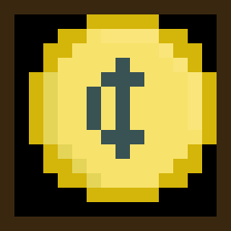
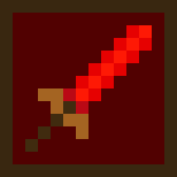
Right off the bat, luck strikes. I already had two icons in the game, gold and attack. I made gold when I added the shop system to the game, thinking ahead there saved me some time. The attack icon was one I added a long time ago. I made it as more of a proof of concept for the icons. I planned to add icons for point and time as well, but never got too it. The attack icon became the basis for all the other icons. A 14x14 sprite with a 1 pixel border, giving me a 13x13 pixel area to work with. The small size was a bit cramped`, but I made it work. Another thing I wanted to do was have different color backgrounds for each icon. The background color would be a darker version of whatever the primary color of the icon is.
Defense
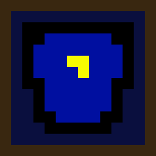
First up, defense. Defense is commonly represented by a shield, and I wasn’t going to break that norm. However, due to the small space and my limited artistic ability, this took much longer than it should. Every time I tried drawing a shield, the shape always ended up being more of a disformed rectangle instead of a shield. In the end, I ended up with a shirt shield hybrid. I put the symbol that is on Daryl’s shirt on the icon and called it a day. I spent too much time trying to get the perfect shape, that the hybrid works. People can see it as a shield or a chestplate, which both convey the same message. Works for me!
Time
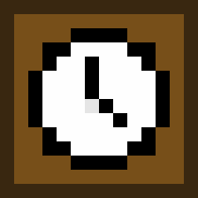
The time icon was easy to think of. A clock makes sense, you see a clock you think time. It was also fairly easy to draw it within a small area. Nothing too interesting to talk about except an idea that popped into my head while making it. What would you use to represent time if clock/watches didn’t exist? The only thing I could think of is a sun and moon transition icon to show the passing of time. Food for thought I guess.
Point
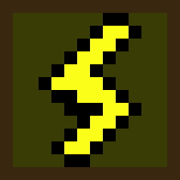
Point by far took the most time to think about. How do you represent a point?! I was thinking tally marks, but there wasn’t enough space to do that within the icon. My next idea was a score board. Not like a big one for a football game, but one for gymnastics where judges put up a number from 1-10. That was my best idea somehow. I realized I could only fit one number in the icon, and a random number wouldn’t convey anything; back to the drawing board. After thinking forever, I thought of other ways to phrase points. Talley, unit, score, I went through the whole list and got the answer, Charge. A charge was perfect, not only because I could make a symbol for it, but it was perfect in the context of the game. Everything you do takes energy, and you have to recharge. Simple! The symbol is a thunderbolt charging up your energy. I don’t know how I didn’t think of this earlier. I’m debating whether I should change the name of points to energy/charge, but I’ll get back to you on that.
Drawing it wasn’t too difficult. I took a look online for inspiration on what the shape should be, but after a couple dozen tries I got it down. The background color is still something I may change in the future. Right now, it's a weird yellowish, green color. I’m not a huge fan of it by itself, but in-game it looks alright.
Health
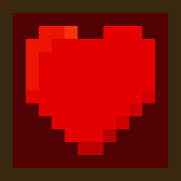
This is another easy one. I really only have two options for heath, the red cross and a heart. I went with a heart just because I have already used hearts in the game before.
Type
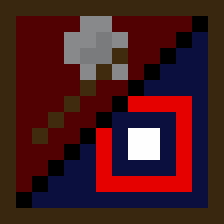
Type is the symbol for showing whether a weapon is melee or ranged. I had an idea on what I wanted to do but I didn’t have enough space. Actually, I did have enough space but because I split the icon in half diagonally I didn’t have enough horizontal area to do much.
The initial idea was to have the icon split in half, and put a symbol on each side. One side would have a sword and the other would have a bow. I tried drawing the sword, but I didn’t have enough space to make it look right. If it put the sword pointing vertically, it would just look like a stick. If I pointed it diagonally, I would run out of space. I tried orienting the sword every which way but it always ended the same, stick or no space.
I ditched the sword and thought of other symbols that could work to represent melee fighting. The next thing I tried was a boxing glove. Not enough space. Sandbag; again, not enough detail to be distinct. I thought of other weapons, and realized I could make an axe. I could use a stick sword that I had gotten so good at making and add a wedge at the top. Just like that, the axe is made.
The other side was much more straightforward. Once I figured that a bow wouldn’t fit, I thought of other things. A target instantly popped into my mind, I drew it and it fit without much problem. It gets cut off in the corner, but you don’t really need the whole thing to get the idea.
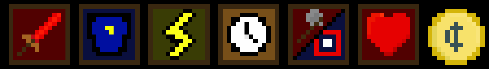
Overall, I think the icons turned out great. My biggest concern was being able to understand what they represent, and I believe I have done that well. Here are some pictures of the icons in-game.
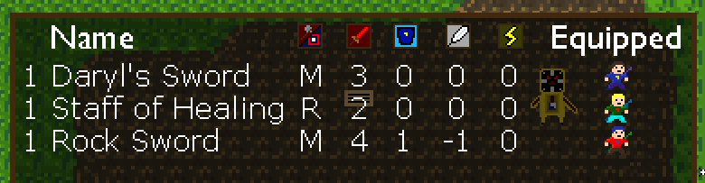
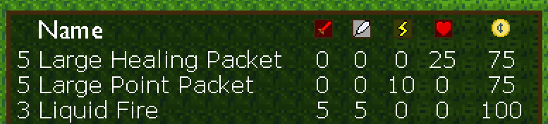
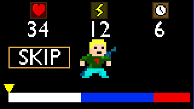
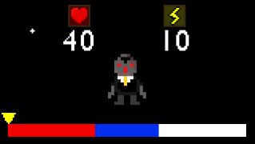
Making these icons gave me even more appreciation for all the artists out there. You guys make this stuff looks easy when it really isn’t. Lots of respect toward you guys, good job!
Any feedback is welcomed and encouraged because my art seriously needs to get better if I am going to get anywhere with this game. You can send any comments you have to me through ttwitter. As I finish up the shop and battle systems, the overworld will continue to expand and my tilesets will expand with it. Expect more art based dev-logs in the future for when I have new areas and new sprites to go along with it.